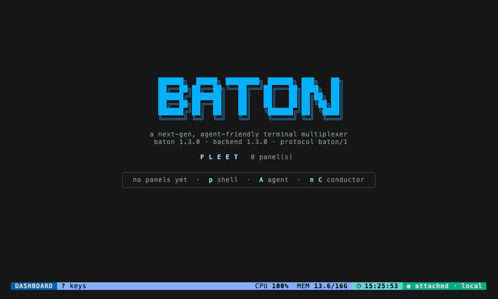

A terminal multiplexer for AI coding agents.
Running a handful of coding agents at once gets messy fast — windows to juggle, sessions scattered across tabs, and no single place to see who is working, who is stuck, and who is waiting on you. Baton is to AI agents what tmux is to shells: one keyboard-driven cockpit over the whole fleet.
You hold the baton. The agents play. You conduct. 🎼
$ brew install cmj0121/tap/baton
$ curl -fsSL https://raw.githubusercontent.com/cmj0121/baton/main/scripts/install.sh | sh
$ go install github.com/cmj0121/baton/cmd/baton@latest
Then run baton. It starts its background server and drops
you on the dashboard: A spawns an agent,
enter zooms into it, q detaches and leaves
everything running. Lost? ? always lists the keys for
wherever you are.

Because tmux has no idea what is in the pane. It hands you windows; you supply the memory of which one is which. Baton assumes the pane holds an agent, and the rest follows from that.
| What you are doing | tmux, by hand | Baton |
|---|---|---|
| Finding who needs you | cycle the panes and read | a live state per panel, and a C-t a inbox of the ones that stopped for a human |
| Keeping related work together | name the windows, remember the scheme | work items — a named group of panels, made with two keys |
| Handing work out | type it into each pane yourself | dispatch a task to one or a whole group, or let a conductor agent drive the fleet |
| Stopping a runaway build | nothing | CPU, memory and process caps, held over the panel's whole process tree |
| Knowing what the fleet costs | nothing | the billing window's tokens and cost, and your quota bars, traced to a panel |
One quiet clock ranks every panel — running, idle, done, stuck — and an agent can raise its own hand above the lot. C-t a opens the inbox from any view, and a desktop notification finds you when nobody is looking.
An agent that drives the fleet for you: it spawns, groups, signals
and prompts the other panels over the socket, through
baton ctl or the baton mcp tools, fenced
so it cannot wreck its own host.
Dispatch a brief to one agent or a whole work item, delivered when it is ready. A persistent backlog is drained onto free agents by a server-owned scheduler, and a Lua hook can rewrite or veto a brief.
Cap a panel's CPU, memory and processes and hold its whole process tree to it, so a runaway build cannot take the machine with it. Enforced with cgroup v2 on Linux.
The billing window's tokens and cost, the focused panel's share of them, and your account's rate-limit bars — in the footer, and attributable to the panel that spent them.
Work-tree diffs, a git menu, signals, fleet-wide grep, container isolation, remote access over ssh, panel logging, Lua plugins, themes — every one of them a keystroke away.